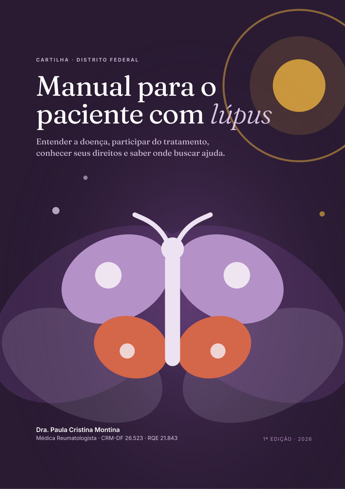
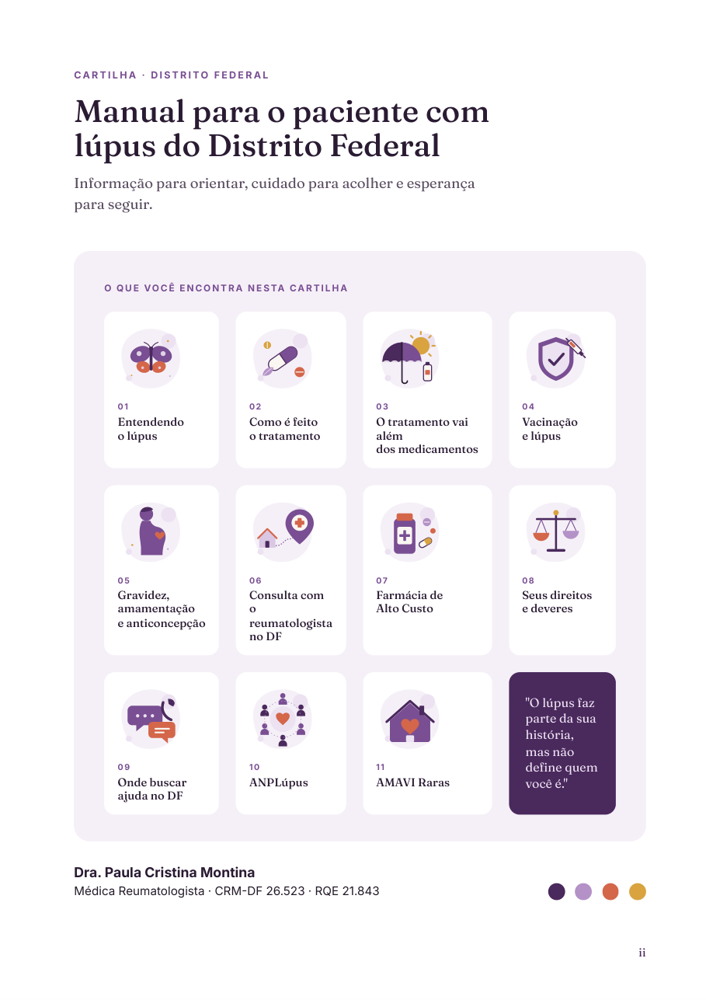
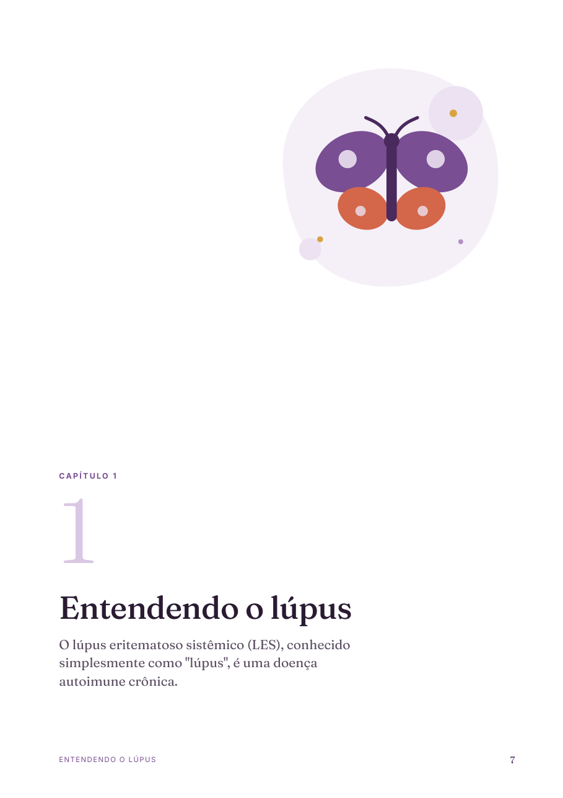
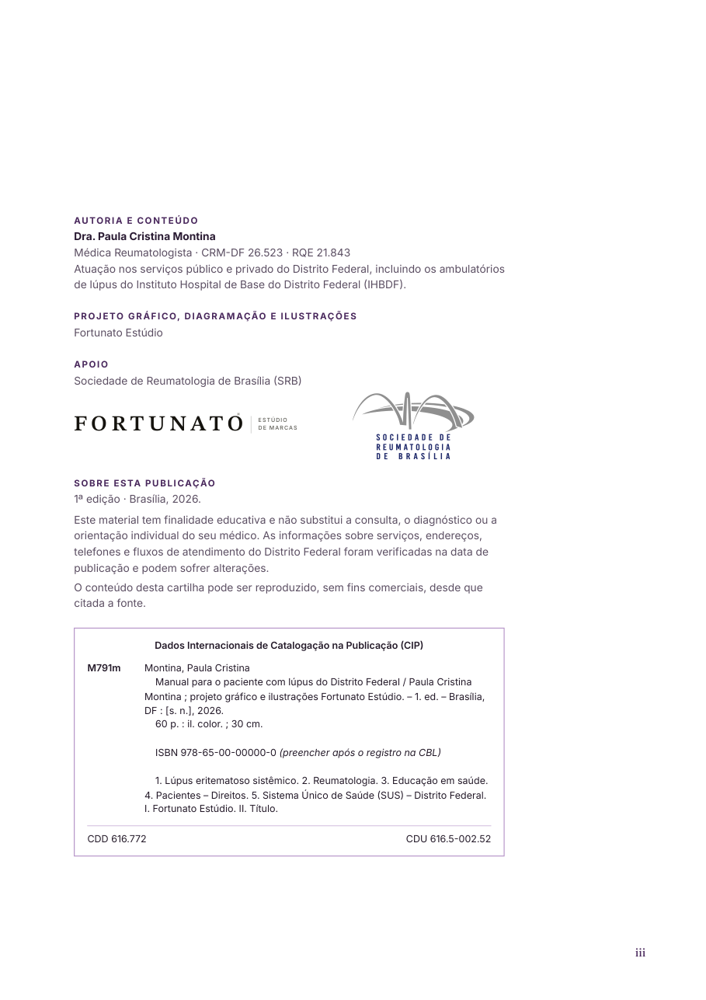
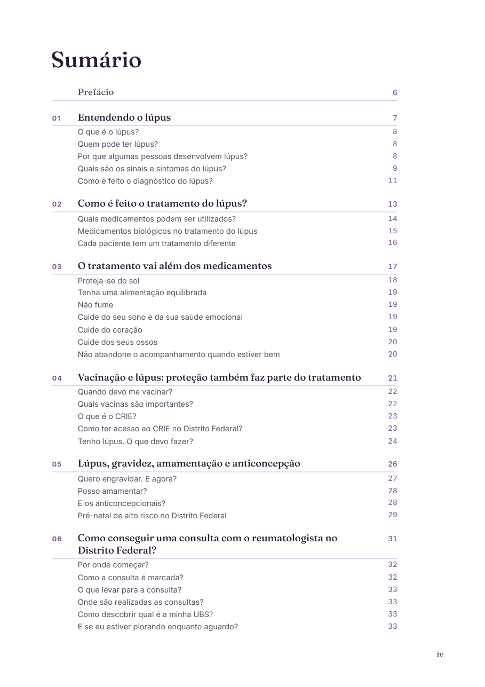
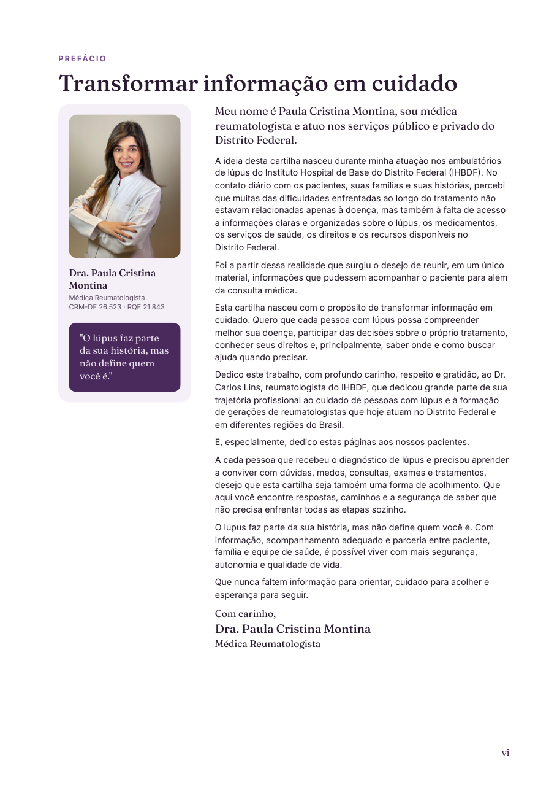
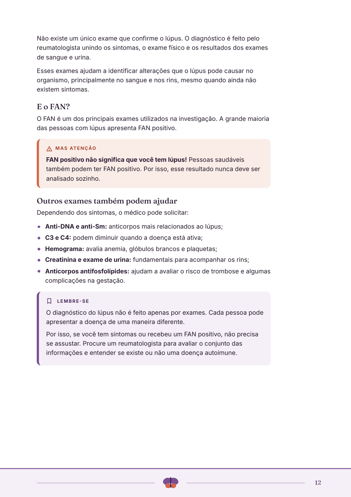
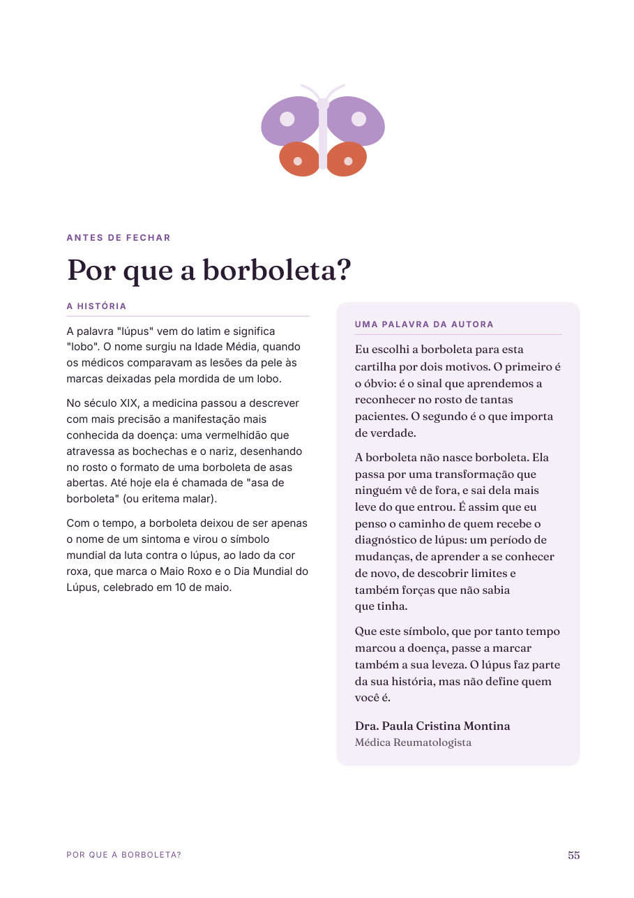
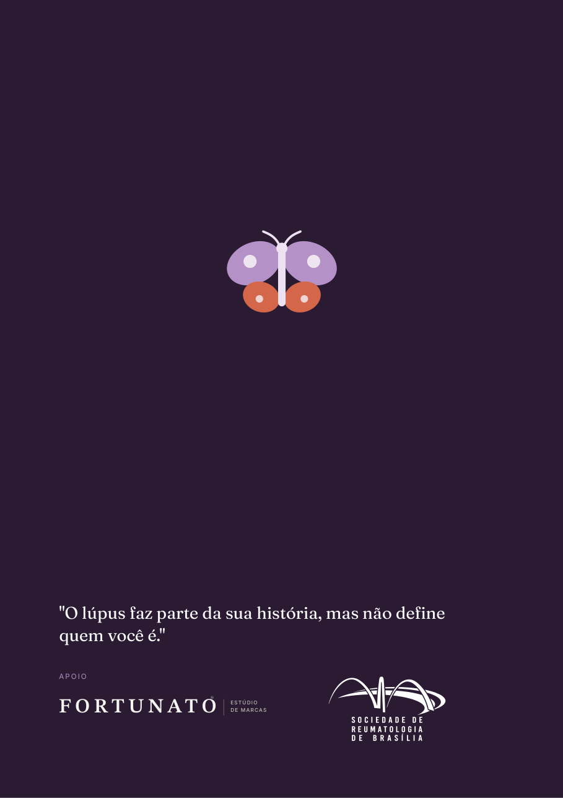

Manual para o paciente com lúpus do Distrito Federal
Cartilha da Dra. Paula Cristina Montina, médica reumatologista
A Dra. Paula Cristina Montina, reumatologista dos ambulatórios de lúpus do IHBDF, escreveu um manual completo para o paciente do Distrito Federal: doença, tratamento, vacinação, gestação, acesso ao SUS, farmácia de alto custo, direitos e redes de apoio.
O material que existia até então, a cartilha nacional da Sociedade Brasileira de Reumatologia, foi considerado pela autora informal e resumido demais: 19 páginas em A5, tópicos curtos, roxo chapado. O pedido foi claro: uma cartilha nacional de referência, com o texto integral, que respeitasse a inteligência do paciente e tivesse a seriedade de um livro.
Quem recebe o diagnóstico de lúpus precisa de informação organizada, não de slogans. A diagramação foi tratada como parte do cuidado: hierarquia clara, ritmo de leitura, e nenhum parágrafo cortado ou resumido.



O símbolo da cartilha nasce do sinal mais conhecido da doença e vira uma imagem de transformação.
A vermelhidão que atravessa as bochechas e o nariz é chamada pela medicina de "asa de borboleta". Com o tempo, a borboleta se tornou o símbolo mundial da luta contra o lúpus, ao lado da cor roxa do Maio Roxo. A cartilha assume o símbolo e o redesenha: asas superiores em lilás, inferiores em terracota, corpo em ameixa, construídas só com elipses e círculos.
Ela é reconhecível para o reumatologista e acolhedora para o paciente. As formas geométricas evitam o desenho infantil e sustentam a frase que fecha o prefácio da autora: "o lúpus faz parte da sua história, mas não define quem você é".
A mesma borboleta aparece em quatro escalas: grande na capa, média na abertura do capítulo 1 e na página "Por que a borboleta?", pequena na contracapa e minúscula na faixa que encerra cada capítulo. Um símbolo, um sistema.
Versão sobre fundo escuro.
Dentro do fundo orgânico das aberturas.
Marca de 11 mm na faixa do rodapé.
O sinal clínico, no ícone de pele.
A capa precisava funcionar em três lugares ao mesmo tempo: na mão do paciente, na mesa do consultório e na foto do lançamento.
Ameixa escura, a cor mais profunda da paleta. Dá peso de livro, destaca a cartilha numa pilha de folhetos claros e faz a borboleta e o título saltarem sem esforço.
A borboleta é o único desenho; o sol dourado no canto superior direito é o único ponto de luz. Nada compete com os dois. As asas translúcidas ao fundo dão profundidade sem virar "ilustração de fundo".
O olho entra pelo título em Fraunces no terço superior, desce pela borboleta e termina nos créditos da autora na base. "Lúpus" em itálico é a única palavra com tratamento diferente: é o assunto do livro.
Nome, especialidade, CRM e RQE da Dra. Paula ficam na base esquerda, como assinatura. À direita, "1ª edição · 2026". Existe respiro deliberado entre a ilustração e os créditos, para nada encostar em nada.
O fundo avança 3 mm na sangria do arquivo de impressão, então a faca pode desviar sem deixar fio branco na borda. As cores foram convertidas para CMYK mantendo a ameixa fechada e o dourado limpo.
Uma família de ameixa e lilás para a identidade, terracota para alerta, dourado para dica. Nada além disso.
#2b1b33#4b2a5e#7a4e93#b592c7#d9c7e3#f5f0f8#d4674a#d9a441#fbf7f1O roxo é a cor do lúpus no mundo inteiro, então a cartilha não foge dele: ela o aprofunda. A ameixa escura dá peso de livro à capa; o lilás claro faz os fundos respirarem. O terracota foi escolhido para alertas porque contrasta com o roxo sem gritar como um vermelho puro, e o dourado marca as dicas como algo positivo. O paciente aprende o código em duas páginas: terracota é "cuidado", dourado é "vale a pena", lilás é "lembre-se".
A cartilha foi organizada como um livro: partes pré-textuais, onze capítulos com abertura própria, uma página de fechamento e a contracapa.
Cada capítulo é uma pergunta diferente do paciente ("posso engravidar?", "meu remédio foi negado, e agora?"). A abertura em página inteira dá uma pausa, avisa a mudança de assunto e deixa o livro fácil de folhear até o ponto certo.






Um conjunto pequeno de peças que se repete do começo ao fim. O leitor aprende o vocabulário nas primeiras páginas e nunca mais precisa pensar nele.
Terracota: informação que evita erro ou risco. Ex.: não suspender medicamentos por conta própria.
Dourado: orientação prática que facilita a vida. Ex.: o que levar para a consulta.
Lilás: a síntese que fecha uma seção, no tom da autora.
Sintomas, remédios e hábitos: ícone à esquerda, título e texto ao lado. Sequências longas ficam escaneáveis.
Código, título, instrução e endereço legível. Os quatro códigos foram gerados em vetor e testados no PDF final.
Traço fino, em linha, para os rótulos das caixas e do bloco de Instagram. Herdam a cor do rótulo em que estão.
Todas as ilustrações desta cartilha são autorais, criadas pela Fortunato Estúdio para este projeto. Nenhuma vem de banco de imagens.
São 43 peças vetoriais: a capa, onze aberturas de capítulo, vinte e quatro ícones de destaque, cinco ícones de rótulo, a marca de fim de capítulo e as versões da borboleta. Por serem vetor, imprimem nítidas em qualquer tamanho, do A5 ao cartaz, e funcionam na web sem perda.
Formas geométricas suaves, sem contorno, construídas só com elipses, círculos e retângulos arredondados. Paleta reduzida à da cartilha. Nenhum rosto realista, nenhuma cena de hospital: o paciente se vê nas imagens sem se ver doente.
A borboleta geométrica, símbolo da doença e da cartilha. Abre o livro com o sinal mais conhecido do lúpus transformado em imagem de leveza.
Cápsula aberta, comprimidos e uma folha: o tratamento é medicamento, mas também é cuidado. As cores separam os tipos de remédio sem parecer bula.
Guarda-sol e protetor solar diante do sol. A mensagem do capítulo é proteção sem privação: quem tem lúpus não precisa viver longe do sol.
Escudo com marca de confirmação e seringa. Vacina como proteção, não como ameaça: o escudo é o protagonista, a seringa é coadjuvante.
Silhueta serena de gestante, coração sobre a barriga e uma lua. Planejamento e acompanhamento, com afeto e sem alarme.
Da casa até o pino no mapa com a cruz: o caminho UBS → regulação → especialista, resumido numa cena que o paciente entende de longe.
Frasco com a cruz da farmácia e comprimidos. Objeto reconhecível na hora, sem a frieza de um balcão institucional.
A balança, com um prato terracota e outro lilás: direitos e deveres em equilíbrio, nas duas cores de destaque da cartilha.
Balões de conversa e o fone: os canais 160, 162 e Defensoria representados como diálogo, porque pedir ajuda é conversar.
Círculo de pessoas ao redor de um coração: a rede de apoio. As figuras alternam dois tons de ameixa, nenhuma é igual à outra.
Casa com o coração dentro: o Espaço Mundo Raro como lugar de acolhimento. Mesmo coração terracota da ANPLúpus, para ligar as duas redes.
Vinte e quatro ícones para os sintomas, os medicamentos, os hábitos e os canais de ajuda. Cada um sobre um quadrado lilás de cantos arredondados, sempre no mesmo tamanho.
Dez figuras, uma terracota: a estatística vira imagem sem precisar de gráfico.
Rosto com o eritema em asa de borboleta, desenhado com leveza para não assustar.
Triângulo de atenção com o sol: alerta que entra na sequência dos sintomas.
Osso estilizado com a articulação em terracota, o ponto da dor.
Os dois rins com a inflamação sugerida em terracota.
Gota com células: anemia e plaquetas sem imagem de laboratório.
Pulmões em lilás e coração terracota: pleurite e pericardite.
Cérebro em duas metades, traço leve.
Mão com as pontas dos dedos em dois tons: o fenômeno de Raynaud.
Comprimido com o sol pequeno: o remédio de base e sua relação com a fotossensibilidade.
Frasco e relógio: menor dose, menor tempo.
Cápsula dentro do escudo: agem sobre a defesa do corpo.
Bolsa de infusão com a gota: administrados na veia ou sob a pele.
Camiseta com o sol no peito: a roupa como filtro.
Maçã com folha: variedade e comida de verdade.
Cigarro com o sinal de proibido em terracota, a cor de alerta.
Lua dourada com estrelas: descanso como parte do tratamento.
Coração com a linha de batimento: risco cardiovascular.
Osso em contorno: massa óssea e corticoides.
Calendário com a marca de feito: consulta mesmo quando está tudo bem.
Pasta com papéis: relatórios, receitas e exames juntos.
Fone com as ondas de chamada.
Megafone: a reclamação registrada.
Balança pequena, versão de bolso do capítulo 8.
O que o leitor não vê, mas sente: as regras que fazem cada página parecer "arrumada".
Porque cartilha de saúde é lida em pedaços, muitas vezes na sala de espera. Cada página precisa fazer sentido sozinha. Regras automáticas garantem que, quando a autora alterar um parágrafo, a cartilha inteira continue arrumada sem retrabalho manual.
Decisões tomadas com base nas recomendações para materiais educativos impressos em saúde.
Um único conteúdo-fonte gera todas as versões. Alterações de texto entram uma vez e se propagam.
A cartilha vai ter novas edições: telefones mudam, protocolos mudam, o ISBN chega. Todo o projeto foi construído para que a segunda edição custe uma tarde, não um novo projeto.
Este memorial acompanha a entrega dos arquivos finais e documenta as decisões de projeto para consulta em edições futuras.
Estúdio de design de marcas · fortunatoestudio.com